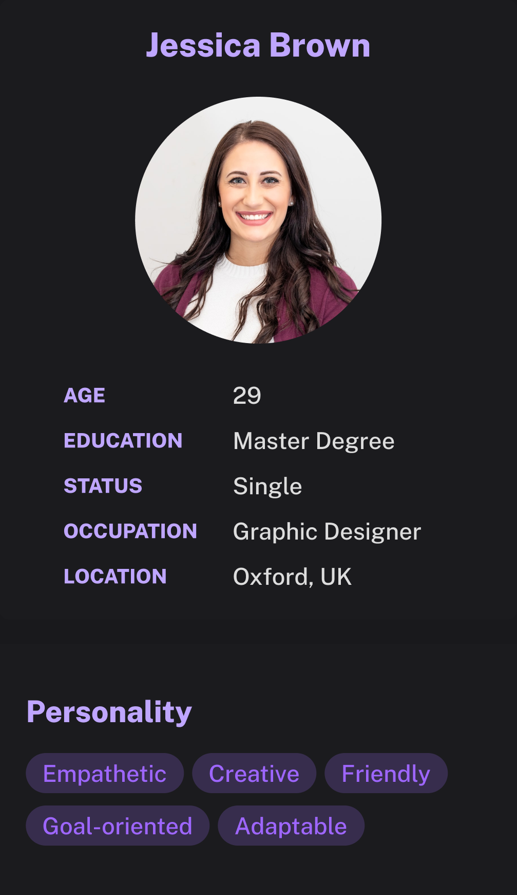

“I love staying active, but it's hard to stick to a routine on my own. I miss the social aspect of working out with others and need a way to stay connected and motivated.”“我喜欢保持活力，但一个人很难坚持。我想念和别人一起运动的那种社交感，需要一个方式让自己有连接、有动力。”
Brief story简述
Jessica is a 29-year-old graphic designer at a marketing agency, living alone in a small city apartment. She has always been moderately active — yoga, the occasional run — but a sedentary job and busy schedule make a consistent routine hard. Working remotely, she feels isolated and is looking for ways to stay fit and stay connected.Jessica，29 岁，在一家营销公司做平面设计，独居在小城市的小公寓。她一直算比较活跃——瑜伽、偶尔跑步——但久坐的工作和忙碌的节奏让她很难维持规律运动。远程办公让她有些孤立，她在找既能保持身材、又能建立连接的方式。
Goals目标
- Maintain fitness:保持运动： build a consistent routine for health and energy.建立规律，改善身体和精力。
- Social connection:社交连接： meet new people and build a network.认识新朋友，建立社交圈。
- Mental well-being:心理健康： reduce stress through regular activity.通过规律运动缓解压力。
- Stay motivated:保持动力： find external accountability and support.寻找外部督促和支持。
Frustrations痛点
- Time management:时间管理： work crowds out regular exercise.工作挤占了规律运动的时间。
- Social isolation:社交孤立： remote work cut her social interaction.远程办公减少了社交机会。
- Lack of motivation:缺乏动力： hard to stay consistent alone.一个人很难坚持。
- Limited space:空间有限： a small apartment limits what she can do at home.小公寓限制了在家能做的运动。